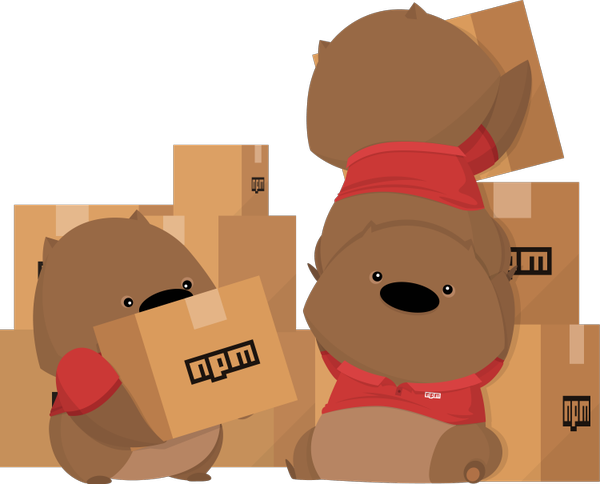
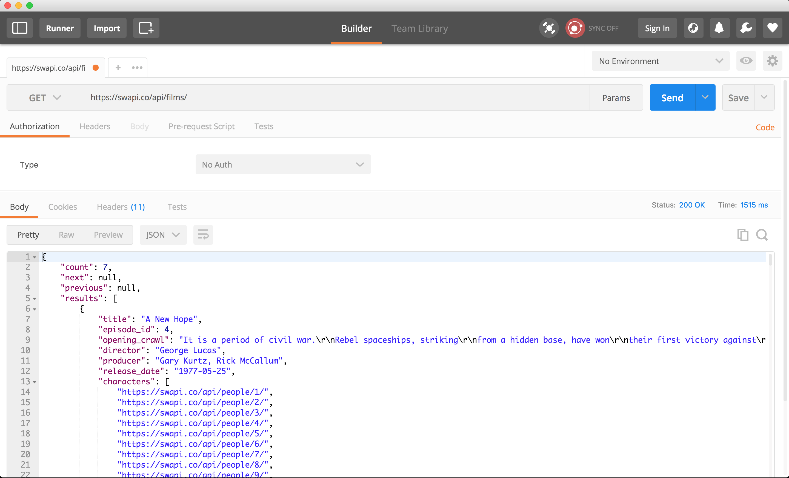
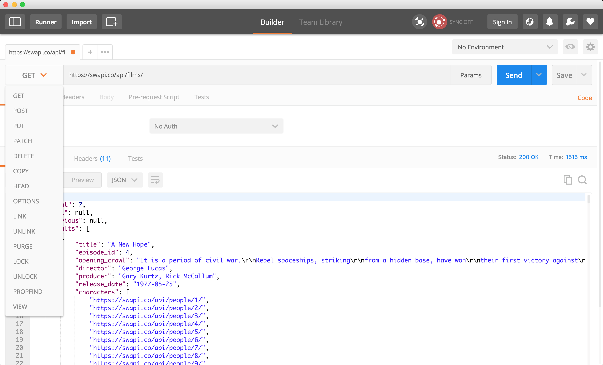
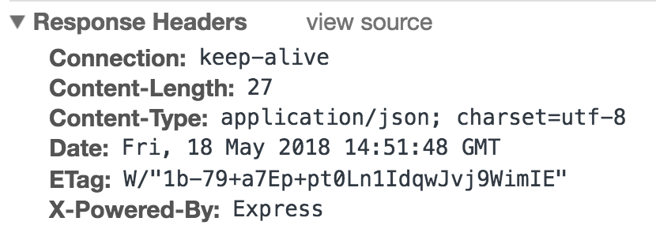
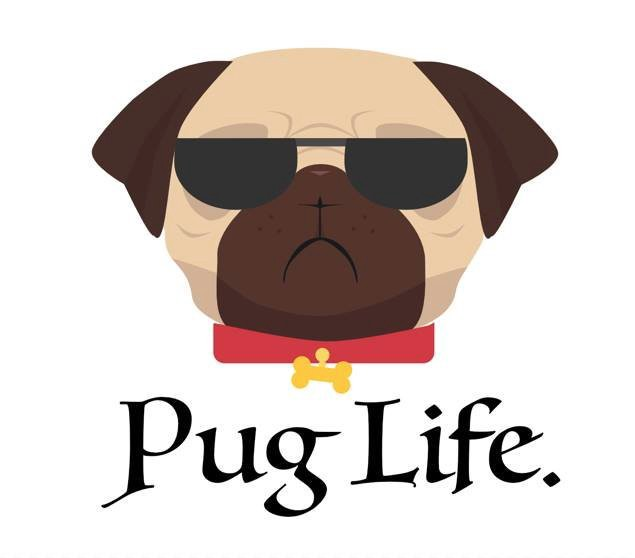

Node.js
- Node.js allows us to run JavaScript in different environments and run different tasks
- Using Node we can:
- Run a simple script (like our exercises)
- Bundle our front-end code and assets using different cool modules
- Run a web server
- Create back-end apps using different databases
- Over this course section we'll focus on using Node.js to create a web server and create a back-end app
- We'll create dynamic documents
- When we installed Node.js we also installed other program called NPM
NPM
NPM used to stand for Node Package Manager but nowadays it's just known as "NPM"
Thanks to NPM we can install many different Node.js modules and import them into our projects
This way we reuse code and we can contribute to other modules too
NPM is one of the largest modules repository
Visit NPM site to learn more about it
Also learn more reading NPM blog
Also, they have the best mascot ever.. NPM wombat!!

Start a new NPM project
To start a new project first we need to create a new folder and change directory to go inside of it
You can do this in unix like systems
mkdir learning-nodecd learning-nodeOnce we're in the right folder we run the NPM command
initThis command asks a lot of questions to configure our project
We can ignore them and just press enter
- npm init
Or we can generate it without having to answer the questions
npm init -yThis script creates a new package.json file that allows us to configure our project
Just looking at the file extension we can figure out that we'll use JSON for our npm configuration file
{"name": "learning-node","version": "1.0.0","description": "","main": "index.js","scripts": {"test": "echo \"Error: no test specified\" && exit 1"},"author": "","license": "ISC"}NPM init uses our answers to create the configuration file based on our answers
Once we have the file we can update any value on it
NPM scripts
In the package.json file we can find a scripts key
By default we have a test script
We can create our own scripts
Add a start script
"scripts": {"test": "echo \"Error: no test specified\" && exit 1","start": "node index.js"},Now we can run this command from our command line
npm startAt this point we get an error
Error: Cannot find module 'index.js'We get this error as we try to execute index.js script and node can't find it
As we are calling
node index.jswe need to create this new file at the same package.json or root levelUpdate the start script definition if you need to move index.js to a different project/folder structure
Create index.js and add the following code
index.js
console.log("Welcome to JavaScript and Node.js server side");Run the npm start command again
npm startWelcome to JavaScript and Node.js server sideNow we know how to create, configure and run scripts using NPM and Node
Install NPM module
Using NPM we can install modules and use them on our projects
Run npm install and the module name to install the given module
You can check and search for modules on the NPM site
In this case we're going to install Express which is a popular module to create a web server
A web server is the magic that gives you a web page when you ask the internet for one :)
- If you are interested in knowing more, here is a good place to start
Check out express npm page
Also, take a look at express site and doc
npm install expresspackage.json
"dependencies": {"express": "^4.16.3"}Running NPM install creates a node_modules folder
Inside node_modules we find all the installed modules for a given project
This folder can grow in size as we can have many installed modules or dependencies
To avoid having issues we can .gitignore this folder
So if we're not sharing the node_modules folder with other team members... do we need to remember the list of installed modules?
By default now NPM installs the modules and add them to our package.json dependencies
Delete the node_modules folder
Run the npm install command but without the module name
npm installNPM reads our list of dependencies, downloads and install all the modules for us
In this case we have only Express as dependency
In many cases we need dependencies that are only for development purposes like for example a library to run our tests, build our bundle or deploy our project
NPM supports devDependencies that are modules that we don't deploy on our server
To install a devDependencies we run npm install and add --save-dev as command parameter
By default npm install now runs
npm install --saveto save the module as dependencyLets install a dev dependency called UglifyJS
npm install uglify-js --save-devOpen package.json to see the installed dependecy
"devDependencies": {"uglify-js": "^3.3.25"}Now we have express installed as dependency and uglify.js as dev dependency
Delete the node_modules and run npm install again to make sure that npm install both dependencies
Lets configure uglify.js to run as script
Add the following script to your package.json file
"uglify": "uglifyjs index.js --output script.js"Open index.js and replace the console.log() for the following code
var firstname = "Ciro";var lastname = "Rodriguez";var age = 20;console.log(firstname);console.log(lastname);console.log(age);Now run the following npm command
npm run uglifyWhen running this command you'll see the following output:
> uglifyjs index.js --output script.jsNPM has configured some scripts names as shortcuts like start and test
When we need to run our own scripts we need to use
npm run scriptnameNPM can execute the code configured on this script as uglify.js is installed in the node_modules folder
NPM can access installed node_modules modules
Open the generated script.js file
script.js
var firstname = "Ciro";var lastname = "Rodriguez";var age = 20;constole.log(firstname);constole.log(lastname);constole.log(age);Uglify.js does a lot of things to bundle our code
Uglify removes all the spaces as we need to create a smaller file so it takes less time to download
This file is prepared to be deployed and not to read
The index.js file still has our code and that it's more readable
We don't need uglify.js as dependency as we prepare our files before we deploy them
This is why we can install it as devDependency
NPM can also uninstall packages running the uninstall command
First we'll install a new module so we can then test this new command
Install Morgan.js
npm install morganCheck the package.json file
"dependencies": {"express": "^4.16.3","morgan": "^1.9.0"},Now run npm uninstall with the module name that you want to remove
npm uninstall morganAfter running npm uninstall your package.json should only have express as dependency
"dependencies": {"express": "^4.16.3"},All this modules has been installed as local dependencies
NPM can also install modules as global so we can run them as programs from anywhere
To install a module as global we also run npm install but we add the -g parameter
For example when we installed http-server we installed it as global so we can use it from any folder
npm install http-server -gAs we're going to create a web server and we already have express installed we could start coding it
Express is a really flexible module but we want to add some structure to our project
Install express-generator as a global module
npm install express-generator -gTo make sure that the module has been installed run the following command:
express --helpIf you get an error running the previous command try closing and opening your terminal again
Sometimes you need to restart your terminal so the terminal notice that there's other modules installed (not so common but it might happen)
Now you should get the following output
Usage: express [options] [dir]Options:-h, --help output usage information--version output the version number-e, --ejs add ejs engine support--pug add pug engine support--hbs add handlebars engine support-H, --hogan add hogan.js engine support-v, --view <engine> add view <engine> support (dust|ejs|hbs|hjs|jade|pug|twig|vash) (defaults to jade)-c, --css <engine> add stylesheet <engine> support (less|stylus|compass|sass) (defaults to plain css)--git add .gitignore-f, --force force on non-empty directoryAs we're learning express lets add our own structure and uninstall this module
We can add it later if we really need it
npm uninstall express-generator -gAs you can see NPM is a great package module and will help us install and uninstall regular or dev dependencies
Modules
A module is just a way to encapsulate our code in a single code unit
This means that we'll organize our code by functionality and create our own modules too
Node.js by default has a module loader that we can use
We can create a single file and use it as module in our project
The require function accepts a string as parameter with the name of the module that we want to get
Require will look into the node_modules folder to see if we have that module installed
const module = require("modulename");We can also use relative paths to load our modules
/|- index.js|- my-module.jsFor example if we have the index.js file and my-module.js we can load the my-module from the index one in the following way
const module = require("./my-module");As both files are siblings we can use
./to let node node know that the my-module module is at the same levelAlso, you can see that we're not using
.jsas my module extensionBy default require will look for a JavaScript file
Using modules
As we have express installed as module we can require it from our project
Delete all the
index.jscontent and add the following oneconst express = require("express");console.log(express);Now run npm start
npm start{ [Function: createApplication]application:{ init: [Function: init],defaultConfiguration: [Function: defaultConfiguration],lazyrouter: [Function: lazyrouter],handle: [Function: handle],use: [Function: use],route: [Function: route],engine: [Function: engine],param: [Function: param],set: [Function: set],path: [Function: path],enabled: [Function: enabled],disabled: [Function: disabled],enable: [Function: enable],disable: [Function: disable],acl: [Function],bind: [Function],checkout: [Function],connect: [Function],copy: [Function],delete: [Function],get: [Function],head: [Function],link: [Function],lock: [Function],'m-search': [Function],merge: [Function],mkactivity: [Function],mkcalendar: [Function],mkcol: [Function],move: [Function],notify: [Function],options: [Function],patch: [Function],post: [Function],propfind: [Function],proppatch: [Function],purge: [Function],put: [Function],rebind: [Function],report: [Function],search: [Function],subscribe: [Function],trace: [Function],unbind: [Function],unlink: [Function],unlock: [Function],unsubscribe: [Function],all: [Function: all],del: [Function],render: [Function: render],listen: [Function: listen] },request:IncomingMessage {header: [Function: header],get: [Function: header],accepts: [Function],acceptsEncodings: [Function],acceptsEncoding: [Function],acceptsCharsets: [Function],acceptsCharset: [Function],acceptsLanguages: [Function],acceptsLanguage: [Function],range: [Function: range],param: [Function: param],is: [Function: is],protocol: [Getter],secure: [Getter],ip: [Getter],ips: [Getter],subdomains: [Getter],path: [Getter],hostname: [Getter],host: [Getter],fresh: [Getter],stale: [Getter],xhr: [Getter] },response:ServerResponse {status: [Function: status],links: [Function],send: [Function: send],json: [Function: json],jsonp: [Function: jsonp],sendStatus: [Function: sendStatus],sendFile: [Function: sendFile],sendfile: [Function],download: [Function: download],type: [Function: contentType],contentType: [Function: contentType],format: [Function],attachment: [Function: attachment],append: [Function: append],header: [Function: header],set: [Function: header],get: [Function],clearCookie: [Function: clearCookie],cookie: [Function],location: [Function: location],redirect: [Function: redirect],vary: [Function],render: [Function: render] },Route: [Function: Route],Router:{ [Function]param: [Function: param],handle: [Function: handle],process_params: [Function: process_params],use: [Function: use],route: [Function: route],acl: [Function],bind: [Function],checkout: [Function],connect: [Function],copy: [Function],delete: [Function],get: [Function],head: [Function],link: [Function],lock: [Function],'m-search': [Function],merge: [Function],mkactivity: [Function],mkcalendar: [Function],mkcol: [Function],move: [Function],notify: [Function],options: [Function],patch: [Function],post: [Function],propfind: [Function],proppatch: [Function],purge: [Function],put: [Function],rebind: [Function],report: [Function],search: [Function],subscribe: [Function],trace: [Function],unbind: [Function],unlink: [Function],unlock: [Function],unsubscribe: [Function],all: [Function] },json: [Function: json],query: [Function: query],static:{ [Function: serveStatic]mime:Mime {types: [Object],extensions: [Object],default_type: 'application/octet-stream',Mime: [Function: Mime],charsets: [Object] } },urlencoded: [Function: urlencoded] }We get a big object definition as output
By using
require('express')we tell node to get express codeIn this case we can assign the value that we get back from the require call
const express = require('express');Node.js also has it own modules
Take a look at Node.js module doc
Create your first module
We can learn more about modules by creating our own one
Create a
math.jsfile and add the following codemath.js
const revenew = 50;const priceCalculation = function(price) {return price + revenew;};module.exports = priceCalculation;Comment the express require call
Require math module and use it from index.js
index.js
// const express = require('express')// console.log(express)const getPrice = require("./math");const price = getPrice(200);console.log(price);Run the project
npm start250In this example we created a module called
mathThe math module exports a
priceCalculationfunction that we can useThis function accepts a number parameter and will return a value with the final price
Node.js uses
module.exportsthat represents an object that we can exportNow that we have our
mathmodule we canrequireit fromindex.jsAs the math module it's not installed in the node_module we use the relative path to import it
require('./math')We defined a variable getPrice and assign what math module is exporting
In this case it's just a function but it could be an object or any other value
Then we can use the getPrice function with any numeric value to get the final price
By using this math module we calculate the final price without knowing the logic behind it
If we need to change the way that we calculate a price we just update the math module an it will work from anywhere it's being called
In case we need or want to share this module between project we can just publish it on the NPM repository
NPM has public and private repositories
Also we can link NPM modules while we develop our projects if we have them as external dependencies
How do Node.js modules work
Node.js uses a module pattern to export code
Once we export our code Node.js will enclose it inside a function so the module scope is private
Module variables and rest of the code will be private
We only can access and use what it has been exported using
module.exportsAlso, we can export more code using just
exportsexports = getPrice;Read and learn more about Node.js modules
Practice
Arrow Functions
Node.js uses arrow functions for its callbacks and you can see many examples in their documentation
Arrow functions are just JavaScript functions that we write in a different way
We won't use the function reserved word
Arrow function definition
// Regular functionfunction() {}// Arrow function() => {}We can assign them to variables in the same way that we used to
const myFunction = function() {console.log("my function call");};const myES6Function = () => {console.log("my function");};Then we can call them in the same way we used to:
const myFunction = function() {console.log("my function call");};const myES6Function = () => {console.log("my function");};myFunction();myES6Function();In this example we see how similar functions and arrow functions are
Arrow functions are part of the ES6 definition and they are simple to write
We can almost use them on any Browser too
const myFunction = function(parameter) {console.log("parameter: ", parameter);};const myES6Function = parameter => {console.log("parameter: ", parameter);};Passing parameters works the same way too
The only difference is that if we only pass one parameter we can remove the parentheses
const myFunction = function(parameter) {console.log("parameter: ", parameter);};const myES6Function = parameter => {console.log("parameter: ", parameter);};They are really usefull when we use them as callbacks:
const students = ["tom", "peter", "maria", "claire"];students.forEach(function(student) {console.log(student);});students.forEach(student => {console.log(student);});In both cases the functions are working as callbacks but arrow functions looks much simpler
Arrow functions change the way that we can return values from it
Using arrow functions will return the value after the => symbol
function getMessage() {return "hi, this is a message";}const getMessageArrowFunction = () => "hi, this is a message";const message = getMessageArrowFunction();As
{ }in arrow functions are used to limit the function body we need to find a different way in case we need them to return an objectWe can use parentheses and curly brackets
function getUser() {const user = {name: "Maria",age: 26};return user;}const getUserArrowFunction = () => ({name: "Maria",age: 26});const user = getUserArrowFunction();console.log(user.name);Arrow functions do not have their own this value
This means that the
thisinside the function it's going to work in a different wayLexical Scoping just means that it uses this from the code that contains the Arrow Function
You can see great examples
Read the MDN Arrow functions doc to learn more about Arrow Functions
Practice
Web Server
Node.js has a build in HTTP module
Using the HTTP module we can create a Node.js Web Server
This web server will listen for
HTTP requestsand sendHTTP responsesRequire the http module to start coding our server
We don't have to run npm install as we're using a build in Node.js module
Create a new server.js file and add the following code
server.js
const http = require("http");const port = 3000;We defined an http variable and assigned what http node module exported
Also we declared a port variable as we're going to need it to set up our server
This means that our server will be listening at port 3000
So now we need to create a server and we can do that using the
createServermethodThis method accepts a callback function as parameter
The callback function gets
2 parametersthat representsrequest & responseThis means that the callback function it's going to be executed on each request and we can handle the response
const requestHandler = (request, response) => {response.end("Hello Node.js Server!");};const server = http.createServer(requestHandler);We'll use the requestHandler function as createServer callback
This means that requestHandler recibes a request and response object that represents the http request & response
requestHandler will be executed on each HTTP request
When we get a request we need to send a response back
In this example we're sending just a text with
'Hello Node.js Server!'contentSo far we haven't told the server on which port it should listen to
We can configure it using
server.listenThis method accepts the port number as first parameter
And a callback function as second parameter
This function will get executed when the server start listening
The callback function gets an error parameter that we can use to check if there's an error
server.listen(port, err => {if (err) {return console.log("something bad happened", err);}console.log(`server is listening on ${port}`);});Now we have all the code together
const http = require("http");const port = 3000;const requestHandler = (request, response) => {console.log(request.url);response.end("Hello Node.js Server!");};const server = http.createServer(requestHandler);server.listen(port, err => {if (err) {return console.log("something bad happened", err);}console.log(`server is listening on ${port}`);});Copy and paste this code into the server.js file
Run the following command
node server.jsIf everything goes well you will see the following message as output
server is listening on 3000Also, you can configure
npm start"start": "node server.js"Now we have a Node.js web server running
Open the browser and input localhost:3000 as url
We get a
Hello Node.js Server!backAs we can see we're using the configured 3000 port
The server will stop if we cut the Node.js script executing
After doing it we won't get a response back from the server
The HTTP module provides the basic features to have an HTTP server
To create a real application we need more abstraction so we can handle more complexity
This is the reason why we have many other modules that uses the basic HTTP adding more features and abstraction
Some the of the most common web server modules are:
In this course we'll use
Express.js
Practice
Express
- Using express we'll be able to execute the following tasks:
- Handle any HTTP request (GET, POST, etc)
- Create and handle specific routes
- Configure templating engines to create dynamic HTML
- Configure and use express
middlewaresto add more features - Configure our server the way we want
- And much, much more!
- Express is a minimal and flexible Node.js web application framework
- This is why we'll add many modules to configure our server like sessions, coockies and more
- Some known modules are maintained by the express core team
- There's no silver bullets on how to create/configure an Express server
Create a web server using Express
We already saw how we can create and start a Node web server using the HTTP module
Now we need to learn how to do it using express
The basic features are going to be the same:
- Request the module
- Configure the server
- Handle request
- Send response
The request object allow us to get a lot of data from the user like username & password, product id or search query
Using these values we can define what we should do, be it: interact with a database, create a session or just send some asset
We can configure express to respond with static content like we have been doing using HTTP-Server module
Also we can create dynamic content
We might do it using a database or not
To create dynamic content we'll use JavaScript and a template engine
So, Express allows us to handle http routes for each request and configure the corresponding response
Configure static assets
Configure template engine
And for any other task we can add many different modules that will help us work better
To have express working we need to first install it
npm i expressNow lets create a basic server by doing a Hello Node.js World example
Example:
// require the express moduleconst express = require("express");// then create a express serverconst app = express();// configure the default route and send a text as responseapp.get("/", function(request, response) {response.send("Hello Node.js World!");});// configure the port that express is going to listen toapp.listen(3000, function() {console.log("Example app listening on port 3000!");});In this example we see how to create a simple Express server
We need to require the express module and create a express app/server
Then we configure a GET default route
/Using the listen method we tell express on which port it will listen to HTTP requests and show a message when the server starts
Now that we have our server running we can visit
localhost:3000using a browser to get the response back from the server
Practice
Using GET routes
As you can see creating routes with express is really easy
We use the
getmethod to obtainGETrequestsThis method accepts a string as first parameter that represents the route that we want to handle
For example we used
/to handle our root routeThe second parameter is a callback function that accepts 2 objects (
request & response) as parametersThe response object has a
sendmethod that we can use to send some data to the client as responseThats why we can see the message back when we send a request to our server
Example:
app.get("/", function(request, response) {response.send("Hello World!");});The express object has many methods to handle HTTP requests using different HTTP methods
Example:
app.post("/", function(req, res) {res.send("Request using POST");});app.put("/", function(req, res) {res.send("Request using PUT");});app.delete("/", function(req, res) {res.send("Request using DELETE");});Also we can use an
allmethod to handle any type of HTTP methodWe can use this
allmethod to configuremiddlewarefeatures for all our callsExample:
app.all("/", function(req, res) {res.send("Request using GET, POST, PUT or DELETE");});Now that we know how express routes work we can create some to handle a products routes
Example:
app.get("/products", function(req, res) {res.send("On this call we show a list of products");});app.post("/product/:id", function(req, res) {res.send("On this call we create a product");});app.put("/product/:id", function(req, res) {res.send("On this call we update a product");});app.delete("/product/:id", function(req, res) {res.send("On this call we delete a product");});Using the browser we can only use GET requests
To use POST we need to create a form and set the method to POST
This is why we have a tool called Postman (you can find more like this one) that will help us request using different HTTP methods
Install and open Postman
Configure the URL that we want to use (request)
We use the send button to create a request to the given URL using the selected HTTP method
Then we can see the server response on the Postman lowers section of the screen

Using Postman we can know the response status (in this example it's 200)
We can also change the request and response HTTP headers
And configure different HTTP methods (POST, PUT, DELETE, etc)s

Practice
Response handling
- Using the
responseobject we can send the response to the client and choose different formats - We can send JSON format if we're creating an API with the corresponding JSON headers
- Also, we can send an HTML (static or dynamic) content as string too
- You can read about all the response types that Express can handle on express doc
JSON
The response
jsonmethod allows us to send the user some data in JSON formatWe can pass a JavaScript object as parameter and the json method will transform it to JSON for us
It will also add the
Content-Type application/jsonheaderExample:
app.get("/", function(request, response) {response.json({ name: "Marta", age: "40" });});Then when we call this route we get: {"name":"Marta","age":"40"} back
Also, we get the right headers too

sendFile
Using the response
sendFilemethod we can send a a file backWe can send any type of file and it will depend on the client if it knows how to read or interpretate this response
If we send html, images, audio, video, js or css and the client is a browser it will be able to handle this response
Example:
const express = require("express");const app = express();const path = require("path");app.get("/", function(request, response) {response.sendFile(path.join(__dirname, "index.html"));});app.listen(3000, function() {console.log("Example app listening on port 3000!");});In this example we're using the
path moduleto join Node.js special__dirnamevariable and the file name (index.html) that we want to sendPath module has a join method that allows us to join this two values
Node.js __dirname will return the current directory
By joining the current direname and the file name we're creating an absolute path so sendFile knows exactly where it needs to get the file from
Practice
Express Router
- As we saw on the products route example we can have many routes for one resource and our server file can grow
- To handle this routing config better we can use
express router - We'll be grouping our routes by action or resource type
- It's easier to read and maitain our server routes this way
Example:
home.js
// Create the express router to handle our home requestsvar express = require("express");var router = express.Router();router.get("/", function(req, res) {res.send("Welcome to our Site!");});module.exports = router;products.js
// Create the express router to handle our products requestsvar express = require("express");var router = express.Router();router.get("/", function(req, res) {res.send("On this call we show a list of products");});router.post("/:id", function(req, res) {res.send("On this call we create a product");});router.put("/:id", function(req, res) {res.send("On this call we update a product");});router.delete("/:id", function(req, res) {res.send("On this call we delete a product");});module.exports = router;index.js
Mount the routes
const express = require("express");const app = express();// Routersconst home = require("./home.js");const products = require("./products.js");app.use("/", home);app.use("/products", products);In this example we see how we can have multiple routers using the express
RoutermoduleEach router that we create can be mounted on the express app and configure the url that it need to handle
Use express.Router() to create a new router
router.get / router.postwill handle the get and post HTTP methodsThen using
app.usewe tell express to use this routes handlersWe call this process
router mounting
Practice
Status and error handling
The response object has a
statusmethod that allows us to set the HTTP status response codesBy default is 200
It accepts a number as parameter
We can also chain this method with others like send
Example:
app.get("/", function(request, response) {res.status(200).json({ firsname: "Pepe", lastname: "Martin" });});app.get("/error", function(request, response) {res.status(500).send("Server error");});In the first example we set 200 as status code and send a JavaScript object as JSON as response
On the error call we want to send an error status back so we set 500 to let the user know that there's a server error
Also, we can handle 404 routes the following way:
Example:
app.use(function(req, res, next) {res.status(404).send("Sorry can't find that!");});In this example we don't specify the route that we want to handle
If the request doesn't match any of the other routes it will execute this one at last
As it didn't found the route we can send a 404 as there's no document to send
We could send a file back too with a cool 404 message
Express also allows us to handle errors
It's going to be similar to 404
We need to add one more parameter that's the error one
The callback function now will have the following parameter:
error, request, response and nextIf we get an error message we can send it to as response
This functions that we pass as parameters are called middleware
The next parameter allows us to call the next express middleware (we'll talk more about it on the next section)
Example:
app.use(function(err, req, res, next) {console.error(err.stack);res.status(500).send("Something broke!");});
Practice
Middleware
A Middleware is a function that has access to the request & response objects
We can chain middleware calls using the
nextfunction in the application’s request-response cycleThe
nextfunction is a function in the Express router which, when invoked, executes the middleware succeeding the current middlewareSo this means that the middleware gets three parameters:
request, response and a function callback called nextExpress has many middlewares that we can install, configure and use
Example:
const express = require("express");const app = express();const myMiddleware = function(req, res, next) {// We set a new property in the request objectreq.someValue = "This is a value to test the Middleware";// We call the next middlewarenext();};app.listen(3000);To use a middleware we use the express
usemethodThis method accepts the function callback as parameter that will get executed on each request
Example:
const express = require("express");const app = express();const myMiddleware = function(req, res, next) {req.someValue = "This is a value to test the Middleware";next();};app.use(myMiddleware); // Add a middlewareapp.listen(3000);Now we can define a new route
Example:
const express = require("express");const app = express();const myMiddleware = function(req, res, next) {req.someValue = "This is a value to test the Middleware";next();};app.use(myMiddleware);app.get("/", (req, res) => {const responseMessage = req.someValue; // We get the request value that we setted from the middlewareres.send(responseMessage);});app.listen(3000);So, a middleware is just a function that will get executed on each request
The callback function will accept three parameters:
- req:
requestobject - res:
responseobject - next: it's a function to call the following middleware
- req:
To call the next middleware we need to call
next()functionUsing the express app and the
usemethod we can configure express to use middlewaresFor example we can use other modules like morgan:
Example:
const express = require("express");const logger = require("morgan");const app = express();app.use(logger("dev"));In this case we imported
morganand configured it as a middlewareWe can use morgan as our server logger
Learn about morgan and how to use it reading the module doc
Using other express middleware is really simple
Learn more about Express middleware reading the docs
Practice
Static Content
So far we created routes to handle our requests
Many times we just need to return a file like index.html, styles.css or scripts.js
All this files doesn't change on the server as they're all static assets
We can configure express to serve statics files from a folder
By convention we call this folder public
Express has a
staticmethod that accepts one string parameterThis parameter represents the static folder name
As this method returns a function we can use it as a middleware
We use express
usemethod to configure a middlewareExample:
const express = require("express");const app = express();app.use(express.static("public"));In this example we set a public folder to serve our static assets
So for example we can call the express server and request for files like index.html, styles.css or scripts.js
We don't need to define our own routes for static assets (get, post, etc)
If we take a deep look to this urls we can see that the public folder will be our site root for static assets
/|-public| |- img| | |- logo.png| || |- js| | |- script.js| || |- css| | |- styles.css||- index.htmlWe can also create a static assets alias using
To create an alias we use the alias name as
app.usefirst parameterThen we pass the middleware as second parameter
Example:
const express = require("express");const app = express();app.use("/assets", express.static("public"));In this example we create
/assetsas our public static assetsThis means that using
/assetsas url we'll have access to thepublicfolder contentDue to this change we need to update the way that we call our assets:
Using an alias we don't let the user know about our folder architecture
Also, we can use any folder for our static assets
We can change the folder name without having to update the alias
Also we can configure more than one folder in case we need to
Express will keep on looking for assets in all configured folders in case that it doesn't find it
Example:
app.use(express.static("public"));app.use(express.static("imgs"));In this case express will try to find first our assets on the
publicfolderIf it doesn't find it, then it will look for them on the
imgsfolder
{kind=link}
{kind=link}
Practice
Templates
Using express we can configure a template engine
Express can use many different templates engines
We'll use Pug as it's express default template engine
Pug it’s a high performance and feature-rich templating engine
Pug helps us write shorter HTML content
This template used to be called
Jadeand it was renamed toPugPug works with indentation or white spaces (like Python)
To see Pug in action we'll have to configure express to use Pug as template engine and also create our first template
Install pug and set it as template engine
npm install pug --saveExample:
app.set("view engine", "pug");Use
app.setmethod to set ourview engineand usepugAnd now we create our first pug template
As it's a pug template we'll use the
.pugextension
Example:
index.pug
doctype htmlhtml(lang='en')headtitle= titlebodyh1= messagediv.containerp Starting using Pug!In some way this looks like HTML but it's much shorter as we're using Pug to write the template
To use this template from express we need to save it on the views folder
If you don't have a views folder you can create one
Project structure:
/|- index.js|- views|- index.pugThe html, head, title, body & h1 template values will render the corresponding HTML tags
Pug compiles this templates into HTML and it will throw a compilation error if identation it's not right
Using pug we can assign values to the elements in the following way:
title= titleorh1= messageIn boths cases we're assigning a value to the title element and the h1 too
Now we need to pass those values to the template so it can render it
title & messageare JavaScript variablesUsing the
=operator in pug will assign the variables value as HTML element contentUse
.classnameto define a class name like div.containerAnd we can just write text if it's static content like
p Starting using Pug!where the element p will have Starting using Pug! as contentindex.js
const express = require("express");const app = express();app.set("view engine", "pug");app.get("/", (req, res) => {res.render("index", { title: "Hey", message: "Hello there!" });});app.listen(3000);In this example we configured a root route
Using the response
rendermethod we can send a response to the userThe render method accepts two parameters
- The first parameter is the template name
- The second parameter is a JavaScript object where each property will become a template variable
So, calling http://localhost:3000 will render the index.pug template passing Hey text as title value and Hello there! as message
Express will render the template and create the content to send to the user
The final template result will be:
<!DOCTYPE html><html lang="en"><head><title>Hey</title></head><body><h1>Hello there!</h1><div class="container"><p>Starting using Pug!</p></div></body></html>You can read more about the render method on Express render doc
Using Pug we have different ways to set HTML content
We already saw that we can change the content using variables
Also, we can use three different ways to set static content:
- Leaving one space between the element and the contentp text as content
- Adding pipe and indentationp| text as content
- Finally using a dot and indentationp.text as content
- Leaving one space between the element and the content
Use parenthesis to write HTML element attributes
a(href='contat.html', target='_blank') ContactOnce this renders it will became a link tag with href and target attributes
<a href="contact.html" target="_blank">Contact</a>Use ids and classes using the CSS notation,
#for ids and.for classesdiv#main main contentdiv.red text in red<div id="main">main content</div><div class="red">text in red</div>Also, we can combine ids and classes
div#container.leftPug has link and script tags support
We use the tag name and parenthesis for the attributes like the rest of the elements
link(href='/css/styles.css', rel='stylesheet')script(src='/js/scripts.js')We can also add css and js code as content in case we need to add styles or JavaScript to the document
For CSS we need to replace link for style but for JavaScript it will still be script (like in the HTML that we already know)
style.body {color: red;}script(type='text/javascript').const message = 'Using JS from PUG';alert(message);<style>body {color: red;}</style><script type="text/javascript">const message = "Using JS from PUG";alert(message);</script>So far Pug it's great but we're still building a complete HTML document
It would be nice to have a more modular way of building our UI so we can reuse sections
Pug has mixin support that allow us to use code blocks
product-mixin.pug
mixin product.product-wrapperh2 Productp Product descriptionNow that we created the product mixin we can include it on our index.pug file and use it
index.pug
include product-mixinbody+productIn this example we use pug include to get the mixin content and call it from the index template
Using
+we let Pug know that this is a mixin that we want to useWe can think about mixin like functions that we call
At this moment we're using the product code but it's just static so it's not that helpful
Adding variables we can make this mixin more useful
product-mixin.pug
mixin product(product).product-wrapperh2= product.titlep= product.descriptionindex.pug
include product-mixinbody+product({title: 'PS4 Pro', description: 'Best console ever, so far..' })In this example we added a product parameter to the mixin so we can pass data to it
When we call the mixin now we need to pass the product object as it's what the mixin is using
Once Pug renders this template we get the expected output
<section><div class="product-wrapper"><h2>PS4 Pro</h2><p>Best console ever, so far..</p></div></section>We can re-use this mixin for other products
index.pug
include product-mixinbodysection+product({title: 'PS4 Pro', description: 'Best console ever, so far..' })section+product({title: 'XBOX', description: 'Other great console' })<section><div class="product-wrapper"><h2>PS4 Pro</h2><p>Best console ever, so far..</p></div></section><section><div class="product-wrapper"><h2>XBOX</h2><p>Other great console</p></div></section>Learn more about mixins on Pug mixin docs
Pug supports template inheritance
To use this useful feature we need to use
block and extends keywordsA
blockis simply a “block” of Pug that a child template may replace over the templateThis process is recursive
Pug blocks can provide default content in case we need it
This provides a default content and is purely optional
The following example defines a scripts, content & foot block
layout.pug
doctype htmlhtml(lang='en')headtitle= titlestyle(type="text/css").body {color: red;}block scriptsbodyblock contentblock footWith this layout we can call the scripts, content and foot blocks
Now we can extend this layout for other templates
index.pug
extends ./layout.puginclude product-mixinblock scriptsscript.alert('alert from a block');block contenth1= messagediv.containerp Starting using Pug!p| text as contentp.text as contentp text as contenta.foo_link(href='about.html', target='_blank') About Usdiv#main main contentdiv.red text in redsection+product({title: 'PS4 Pro', description: 'Best console ever, so far..' })section+product({title: 'XBOX', description: 'Other great console' })block footdiv This footer content comes from a blockUsing block scripts we're able to add code to the scripts layout section
The same happens with content and foot
Once Pug renders everything together we get the final HTML result
<!DOCTYPE html><html lang="en"><head><title>Hey</title><style type="text/css">body {color: red;}</style><script>alert("alert from a block");</script></head><body><h1>Hello there!</h1><div class="container"><p>Starting using Pug!</p></div><p>text as content</p><p>text as content</p><p>text as content</p><a class="foo_link" href="about.html" target="_blank">About Us</a><div id="main">main content</div><div class="red">text in red</div><section><div class="product-wrapper"><h2>PS4 Pro</h2><p>Best console ever, so far..</p></div></section><section><div class="product-wrapper"><h2>XBOX</h2><p>Other great console</p></div></section><div>This footer content comes from a block</div></body></html>You can learn more about layouts and blocks on the Pug inheritance docs
So far we learned a lot about Pug and how it works and it looks like it's a really helpful tool to build our ui
But we're still missing some main features like using js code, iterating elements or using conditionals inside our templates
Use
-to define JavaScript variables inside the templates- const niceTitle = 'This is a nice title';Then we can use this title variable on our templates
h1= niceTitlep This template has a nice #{niceTitle}In this example we defined a niceTitle string variable with the text: This is a nice title
The we used this variable on our template in two different ways
- First we assign
niceTitlevalue ash1 element contentusing=operator - The we used the same
niceTitlevalue as string Interpolation using#{niceTitle}
- First we assign
We could even use HTML encoded content and Pug will escape that content for us
- myDivContent = '<span>This content is from a template variable</span>';div This div has a span #{myDivContent}<div>This div has a span <span>This content is from a templatevariable</span></div>We can see that Pug will replace the
< >simbols for the HTML entities so we can show the HTML tags as content instead of real html contentYou can learn more about string interpolation, escape sequence, whitespace and more on Pug interpolation docs
We can use conditional inside our templates
- var language = "spanish"if language == "spanish"p Estas programando muy bien, felicitaciones!!elsep Your code rocks, Congrats!!In this case we'll get the following HTML as we defined language as spanish
Also, we could change the language value to other language and we'll see the message in english
<p>Estas programando muy bien, felicitaciones!!</p>Pug gives us a
unlessthat works like a negated if (!)unless language != "spanish"p Your code rocks, Congrats!!Learn more about conditionals on Pug conditionals doc
We have different options to iterate over our values using Pug
Use each to iterate over an array
- hookCharacters = ['Peter', 'Nana', 'Captain Hook']uleach character in hookCharactersli= character<ul><li>Peter</li><li>Nana</li><li>Captain Hook</li></ul>In this example we use a local array but we could get this value from express and the render method
Using
eachwe get each value of the arrayIn this case we iterate the
hookCharactersarraySo on each iteration we get a
charactervalueThen we tell Pug to use the character name as li element content
li= characterWe can also get the iteration index
- hookCharacters = ['Peter', 'Nana', 'Captain Hook']uleach character, index in hookCharactersli= index + ': ' + character<ul><li>0: Peter</li><li>1: Nana</li><li>2: Captain Hook</li></ul>We can also use
whileas PUG iterator- var n = 0;ulwhile n < 4li= n++<ul><li>0</li><li>1</li><li>2</li><li>3</li></ul>Learn more about iteration on Pug iteration doc
Check out Pug assets and sources to learm much more about this powerful template engine

Sending/getting data from the client to the server
To send data from the client to the server we can use forms or ajax calls
Using forms we'll be able to send values using GET and POST
By doing AJAX calls we can use HTTP GET, POST, UPDATE and DELETE
We need to configure Express routes to get the request values using one of this methods
If the server expects the values from GET, the client will send them using GET method
In case the server expects the value from POST, the client will send them using POST method
So we need to send values to the server the way it expected them
One of the most simple way to pass a value to the route handler is using the express params
For example we can create a route handler for
/products/and add a product idIn this case the URL it's going to look like:
http://localhost:3000/products/1In this case we're calling the products handler and passing an id to it
Express has a special way to configure URL parameters and it's using
:on the route handlerFor example we can create a route like
/products/:idIn this URL
:idit's the parameter that we're going to passLets define the route this way
app.get("/products/:id", (req, res) => {res.send("Product with the id: ");});In this example we see that we can create a route handler that it's expecting a URL parameter
In this case the url it's going to be
http://localhost:3000/products/10Now we need to know how to retrieve this id parameter using Express
The request object has a params property that it's an object with all the parameters that this request has
As we configured
:idand we called using/products/10there's going to be anidproperty on the request.params objectTo get the id from the url we use
req.params.idapp.get("/products/:id", (req, res) => {const id = req.params.id;res.send(`Product with the id: ${id}`);});In this example we see how using req.params.id we can get the id from the URL
Other way to send values to the server it's using query string
We know that using an url like
http://localhost:3000/products/?id=1we are passingid=1as query stringThe request object has a query property that allows us to get the URL query string params
Using
req.querywe get an object back that represents the URL query stringIn this case we want to get the id value so we can do
req.query.idto get1as value backapp.get("/products", (req, res) => {const id = req.query.id;res.send(`Product with the id: ${id}`);});In this example we see that the route it's waiting for a query parameter with the id name
If we call
http://localhost:3000/products?id=1we pass id as query parameter with value 1In this case this req.query.id will become 1 and we assign it to the id variable
So we can say that this are two different ways to pass values using GET and express routes
Notice the different between using
/products/:idandreq.params.idThe other option is to use
/productsand query string likereq.query.idNow that we know this we can create a form and send values to the server
<form action="/products" method="get"><input type="text" name="username" placeholder="username" /><input type="text" name="firstname" placeholder="firstname" /><input type="text" name="lastname" placeholder="lastname" /><input type="submit" value="Submit" /></form>This form has three inputs username, firstname & lastname
When we submit this form all this values will be submitted to
/productsAs the form is configured to use GET it will send all this values using query string
The URL it's going to look like:
http://localhost:3000/products?username=nisnardi&firstname=nicolas&lastname=isnardiWe can see that we'll have a
username, firstname & lastnamevaluesOn the Express route handler this will become:
req.query.username;req.query.firstname;req.query.lastname;Now we can configure our route to handle this values
app.get("/products", (req, res) => {const username = req.query.username;const firstname = req.query.firstname;const lastname = req.query.lastname;res.send(`We got the following values from the query string: ${username}, ${firstname} & ${lastname}`);});We can see that we can use query string to retrieve values from the form
As we sent them using GET from the form we need to use req.query to retrieve the values
Once the route handler gets executed it will get the query values and we define three variables to store each query string value
Then we just send the response using this query string values
We got the following values from the query string: nisnardi, nicolas & isnardiTo send data to the server using POST we can change the form action
<form action="/products" method="post"><input type="text" name="username" placeholder="username" /><input type="text" name="firstname" placeholder="firstname" /><input type="text" name="lastname" placeholder="lastname" /><input type="submit" value="Submit" /></form>As you can see the only value that changed is
method="post"(it used to be get)Now the values won't be submitted as query string and instead we'll send them on the request body
To use Express to get POST values we need to add body-parser that's a Express middleware
Body parser can get all the POST requests or we can configure it just fo the routes that we want
Then it will get the POST values and append then as request body property
So in this case we're sending
username, firstname & lastnameAnd they will become
req.body.username, req.body.firstname & req.body.lastnameafter executing body-parser as middlewareTo use this module we need to install it
npm install body-parserOnce we installed the module we need to configure it
const bodyParser = require("body-parser");const urlencodedParser = bodyParser.urlencoded({ extended: false });First we required body-parser module
Then we configure body-parser for urlencoded (the form enctype that we use by default)
We assign the body-parser return value to the
urlencodedParserNow we can use this middleware in our routes
We'll add
urlencodedParserto any route that we want body-parser to append the POST values into the request bodyapp.post("/products", urlencodedParser, (req, res) => {const username = req.body.username;const firstname = req.body.firstname;const lastname = req.body.lastname;console.log(req.body);res.send(`We got the following values from the query string: ${username}, ${firstname} & ${lastname}`);});In this example we configured a post route handler for
/products/When we submit the form it will send the request to this route handler
The request will send all the form values
Using
urlencodedParserwe configure this route to use body-parserThis means that when this route gets called we'll have all the form values in the
req.bodyobjectTo get the values sent from the form we use:
req.body.username, req.body.firstname & req.body.lastnameThis names comes from the form inputs name
When we show the
req.bodyvalue on the console we get:{username: 'nisnardi',firstname: 'nicolas',lastname: 'isnardi'}The req.body it's a JavaScript object and body-parsed added username, firstname & lastname as properties
Then using this properties we can get the values
The last thing that we need to know is how to send files
Express won't handle our files upload so we need to use a module called Multer
Multer works in a similar way that body-parser
We can only use multer if we're uploading images
Something really important is that as we're going to be uploading a file we need to set the form enctype in a different way
When using multer set the
form enctypetomultipart/form-dataMulter will append the values to the request body
We can configure multer to use one or many files
For now we can configure to use it with one file to make it easier
First we need to install multer to our project
npm i multerNow that we have multer installed we need to require ir and configure it
const multer = require("multer");const upload = multer({ dest: "upload" });After requiring multer as module we need to configure the folder that we're going to store the uploaded images
In this case we configured
uploadas the destination folderAs we're going to send a file we need to update our form
<form action="/products" method="post" enctype="multipart/form-data"><input type="text" name="username" placeholder="username" /><input type="text" name="firstname" placeholder="firstname" /><input type="text" name="lastname" placeholder="lastname" /><input type="file" name="file" /><input type="submit" value="Submit" /></form>To upload the file we need to change the
enctype="multipart/form-data"so multer can take care of itAlso we need to add a
<input type="file" name="file">Note that the name of the input is
fileas this is the value that we need to set up in multer tooapp.post("/products", upload.single("file"), (req, res) => {const filename = req.file.originalname;console.log(req.body);console.log(req.file);res.send(`Congrats we uploaded the following file ${filename}`);});in this example we can see that multer will store the inputs values into the request body (the same as body-parser)
The body object will look something like:
{username: 'nisnardi',firstname: 'nicolas',lastname: 'isnardi'}In this example we see that it looks the same way that using body-parser
As we configure
upload.single('file')we told multer to get thefilevalue and upload it to theuploadfolderUsing
req.filewe can access the uploaded file valuesWhen we configure multer with
upload.singleit will usereq.fileto append all the file valuesRemember that we used
fileas input nameIf we use other input name like
avatarwe still use req.file to get the values butupload.single('avatar')to configure the rout handlerOur
req.fileobject will look like this:{fieldname: 'file',originalname: 'lukecage.jpg',encoding: '7bit',mimetype: 'image/jpeg',destination: 'upload',filename: '7b4f43860a856577f5c47aba1ae592c5',path: 'upload/7b4f43860a856577f5c47aba1ae592c5',size: 13078}In this example we can see that using
originalnameproperty we get the uploaded file real nameMulter will add a random name to the uploaded file by default
filename: '7b4f43860a856577f5c47aba1ae592c5'This means that the file on the server won't be
lukecage.jpgbut7b4f43860a856577f5c47aba1ae592c5We can configure multer to use a different file name in case we want to
You can read about it on the multer doc
Express has many cool forms to handle sessions, form validations, security and much more!
Go for it and look for more Express modules and learn how to use it by reading the modules doc
We're CRAZY about JavaScript, Node.js and Express.js
Assets / Sources
- NodeSchool - Free Node.js, JavaScript and more courses
- pugjs.org
- Codeburst - getting-started-with-pug-template-engine - Medium ()
- dcode - Pug (Jade) Tutorial #1 - Getting Started | HTML + NodeJS - Youtube
- jade
- Learn pug.js with pugs
- Pug.js - Cheat sheet
- Express server side rendering
- Practical Node - online book (look at the PUG sections over the index)
- Youtube - Node.js / Express / MongoDB - Build a Shopping Cart
- Youtube - Node Authentication Tutorial | Creating a User Based App from Scratch